GUI SEM via lavaan in jamovi
keywords semlj,jamovi, lavaan, SEM
SEMLj GUI module based on lavaan
1.3.*
Introduction
The SEMLj module is a jamovi
interface to lavaan R package (Rosseel 2012). The module offers a
Graphical User Interface (point-and-click) to build a model, which is
translated in lavaan syntax and passed to R lavaan functions . All the
available options are in the foldable panels below the variable
definition fields. Thus, it is recommended that the user takes a look at
lavaan website for details.
User Interface
When installed, the module sub-modules can be found in the
SEM menu.

Here we need SEM (interactive).
Latent variables definition
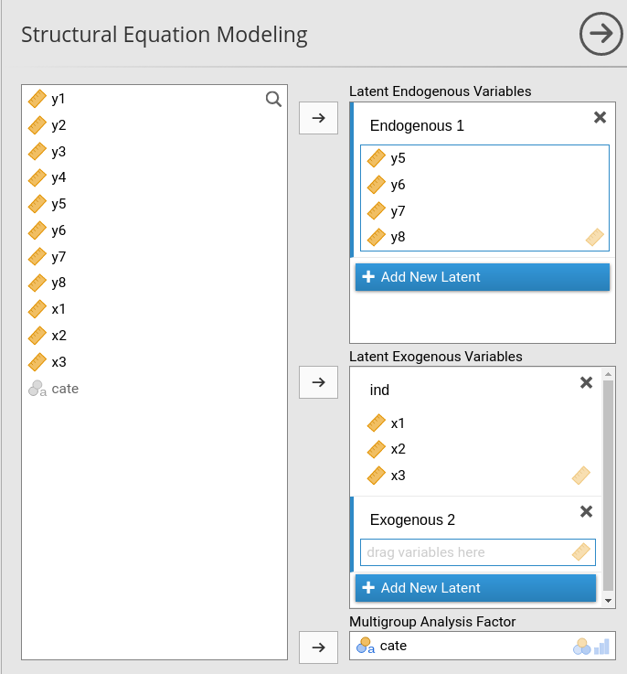
The panel allows to define a set of endogenous and exogenous variables, measured by one or more observed variables. To make the interface simple and efficient This allows estimating almost all sort of structural equation models and path analysis (but check out the jamovi module PATHj, dedicated to path analysis). It allows for factor analysis models, but check out the jamovi CFA core command (in “Factor” menu) for a dedicated command.
Thus, the sub-module can estimate:
- Path analysis models
- Structural Equation models
- Multigroup Analysis
- Defined parameters (i.e a:=p1^2)
For each latent variable, the user defines the variable name (in the figure one changes Endogenous 1 into a name of a latent variable) and specifies which observed variables (in the right field) are measures of the latent variable by bringing the observed variables into the right field. In the example portraited in the figure, Endogenous 1 is measured by \(y5\),\(y6\),\(y7\) and \(y8\), whereas the latent exogenous ind is measured by \(x1\),\(x2\) and \(x3\).
In this page, we assume that the user has named the endogenous latern variable latent_dep and the exogenous latent variable latent_ind, as in the next figure.
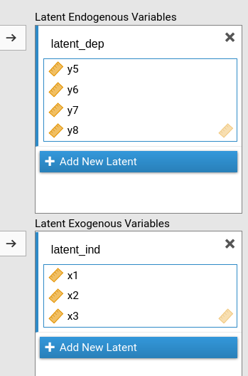
One can define as many latent variables one needs by clicking on Add New Latent button.
At the right bottom of the panel we find also the Multigroup Analysis Factor, in which one puts the categorical variable defining groups for multi-group analyses.
Type of variables
To obtain a standard SEM model, please be sure that the observed
variables are marked as continuous variable in the dataset.
You see a little ruler icon on the left of the variable name,
like this:
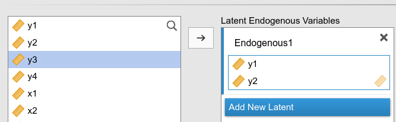
When variables are defined as continuous, they are
considered continuous variables in SEMLj.
Categorical variables can be analyzed if they are defined as
dichotomous or ordinal variable. SEMLj
treats variables as ordered variables if they are defined as
Nominal or Ordinal in the dataset, like
this:
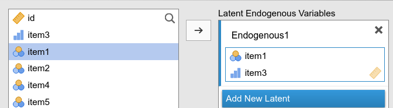
When indicators are ordinal or nominal, Diagonal Weighted Least Squares is used for estimation, with robust standard error. Please refer to lavaan documentation for more details.
Second Order Factors

This panel is useful to define second order factors, that is latent variables that are measured by other latent variables. See Second order mediation analysis for an example of usage.
Endogenous models
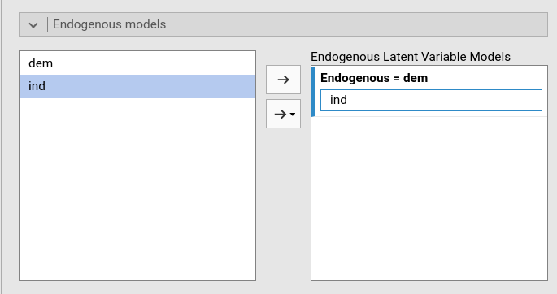
In this panel one specifies the relationship among latent variables (the stuctural relationships). The user can simply declare here what are the latent predictors of the latent endogenous variables. At least one relationship should be defined.
Variances and covariances
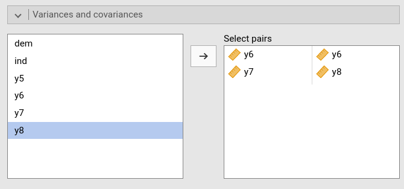
In this panel one specifies the variances and covariances to estimate (set free). Variances are specified by selecting twice a single variance (as for \(y6\) in the figure). Covariances by selecting two variables and than click the central arrow.
Custom model settings
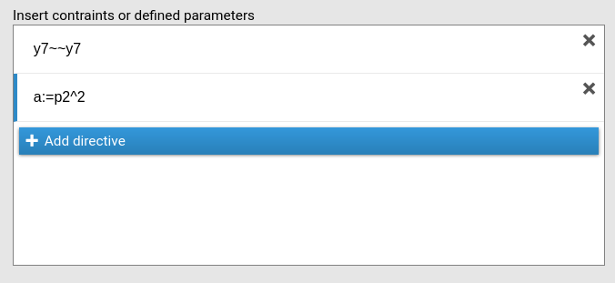
In this panel one specifies additional model settings, such as free
variances or defined parameters by passing lavaan syntax,
one directive per row. In the picture, for instance, the users frees the
variance of \(y7\) with the
y7~~y7 syntax, and define a new coefficient to estimate
a as the square of the p1 coefficient. The
pN notation is the label of a coefficient that SEMLj automatically assigns to each estimated
coefficient. To see what they are, simply select Show parameters labels in the Output options panel.
Syntax examples can be seen by selecting Show syntax examples in the Output options, which returns in output the following table of examples:
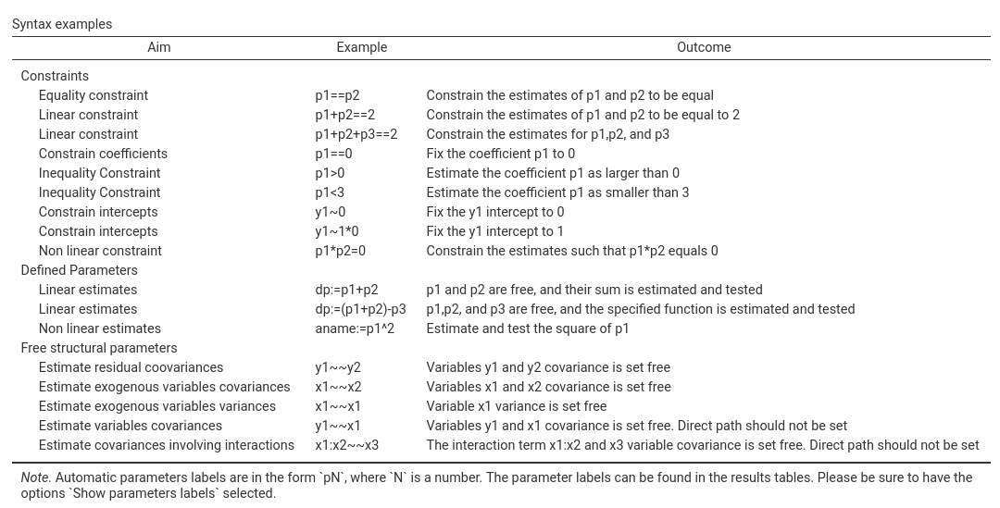
Model Options
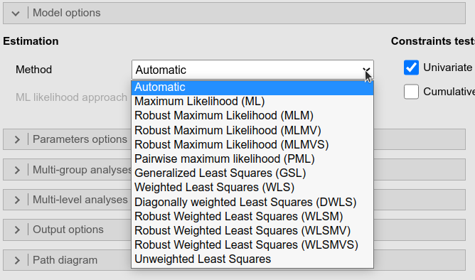
The Estimation Method allows choosing the
right estimation method available for a model. The Automatic option (default) lets
lavaan choose the right method depending to the type of
model one is estimating.
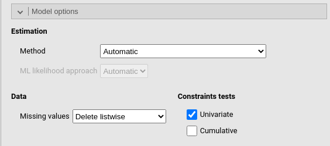
Constraints tests computes the \(\chi^2\) test for contrainted coefficients (if any). In case one has more than one contraints, each constraint is tested uniquely (if Univariate is flagged) and in addition to the previous ones (if Cumulative is flagged).
Under Data one can decide how to handle missing values.
The options for this panel are are:
| Method |
The estimator to be used (cf. lavaan R package). Can be one of the
following: “ML” for maximum likelihood, “GLS” for (normal theory)
generalized least squares, “WLS” for weighted least squares (sometimes
called ADF estimation), “ULS” for unweighted least squares, “DWLS” for
diagonally weighted least squares, and “DLS” for
distributionally-weighted least squares. These are the main options that
affect the estimation. For convenience, the “ML” option can be extended
as “MLM”, “MLMV”, “MLMVS”, “MLF”, and “MLR”. The estimation will still
be plain “ML”, but now with robust standard errors and a robust (scaled)
test statistic. For “MLM”, “MLMV”, “MLMVS”, classic robust standard
errors are used (se=“robust.sem”); for “MLF”, standard errors are based
on first-order derivatives (information = “first.order”); for “MLR”,
Huber-White robust standard errors are used
(se=“robust.huber.white”). In addition, “MLM” will compute a
Satorra-Bentler scaled (mean adjusted) test statistic
(test=“satorra.bentler”), “MLMVS” will compute a mean and variance
adjusted test statistic (Satterthwaite style)
(test=“mean.var.adjusted”), “MLMV” will compute a mean and variance
adjusted test statistic (scaled and shifted) (test=“scaled.shifted”),
and “MLR” will compute a test statistic which is asymptotically
equivalent to the Yuan-Bentler T2-star test statistic
(test=“yuan.bentler.mplus”). Analogously, the estimators “WLSM” and
“WLSMV” imply the “DWLS” estimator (not the “WLS” estimator) with robust
standard errors and a mean or mean and variance adjusted test statistic.
Estimators “ULSM” and “ULSMV” imply the “ULS” estimator with robust
standard errors and a mean or mean and variance adjusted test statistic.
|
| ML likelihood approach | Only relevant for ML estimation. If “Wishart”, the Wishart likelihood approach is used. In this approach, the covariance matrix has been divided by N-1, and both standard errors and test statistics are based on N-1. If “Normal” or “Automatic”, the normal likelihood approach is used. Here, the covariance matrix has been divided by N, and both standard errors and test statistics are based on N. |
| Missing values |
Handling of missing values. listwise delete rows with
missing. FIML for ‘full information’ maximum likelihood
estimation. FIML (including fixed x) for ‘full information’
maximum likelihood estimation that includes also the fixed exogenous
variables. Two stages (robust) uses a two stage appraoch
whereas Pairwise deletes case pairwise before computing the
covariances between variables.
|
| Univariate | Score test (or Lagrange Multiplier test) for fixed or constrained parameters in model. |
| Cumulative | Score test for all fixed or constrained parameters in model (cumulative tests). |
Type of models
Users familiar with lavaan or with lavaan documentations
may want to distinguish between different types of models, namely,
cfa (confirmatory factor analysis), sem
(structural equation models) and growth (individual growth
models). These models enjoy the same underlying estimation procedure,
but they are different in the options passed to lavaan. In
SEMLj, one can obtain the same results
as sem and cfa setup using the default options
settings (unless you know you need some change). For growth
model type, one needs to set Intercepts->Observed variables to false
(unselect it), and Intercepts->Latent
variables to true (select it) in the Parameters Options panel, and you’re a happy
camper.
Model parameters
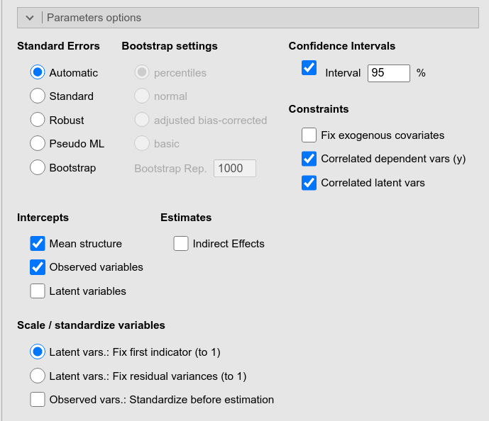
This panel offers many options to be passed to lavaan
for specify parameters characteristics, such as how to compute their
standard errors, their confidence intervals, or how to fix scales of
latent variables.
In addition, it offers the Indirect Effects option which computes and estimate all possible indirect effects (from exogenous to endogenous variables) present in the model.
The options are:
| Standard errors | Standard error method. |
| Bootstrap C.I | Choose the confidence interval type (“perc” - percentiles [default], “bca.simple” - adjusted bias-corrected, “norm” - normal, “basic” - basic). |
| Bootstrap Rep. | The number of bootstrap samples for estimating confidence intervals. |
| Parallel Computation | use parallel computation for bootstrap C.I |
| Estimates |
TRUE or FALSE (default), show confidence
intervals for estimates
|
| Betas |
TRUE or FALSE (default), show confidence
intervals for standardized estimates
|
| Confidence level | A number between 50 and 99.9 (default: 95) specifying the confidence interval width for the parameter estimates. |
| Fix exogenous covariates |
If TRUE, the exogenous covariates are considered fixed
variables and the means, variances and covariances of these variables
are fixed to their sample values. If FALSE, they are
considered random, and the means, variances and covariances are free
parameters. If “default”, the value is set depending on the mimic
option.
|
| Dependent vars (y) |
TRUE (default) or FALSE, TO ADD
|
| Latent vars |
TRUE (default) or FALSE, is the negation of
orthogonal option
|
| Mean structure | If TRUE, the means of the observed variables enter the model. Required for calculating the intercepts of the estimates. |
| Observed variables |
TRUE or FALSE (default), calculate intercepts
for observed variables
|
| Latent variables |
TRUE or FALSE (default), calculate intercepts
for latent variables
|
| Indirect Effects | compute the indirect effect by finding all paths from exogenous to endogenous variables, and multiply the coefficients along the path. |
| Scale / stand. latent vars. |
If Fix first indicator (default), the factor loading of the
first indicator is set to 1.0 for every latent variable. If
Fix residual variances, the metric of each latent variable
is determined by fixing their (residual) variances to 1.0. If there are
multiple groups, Fix residual variances is chosen and
“loadings” is included in the group.label argument, then only the latent
variances i of the first group will be fixed to 1.0, while the latent
variances of other groups are set free.
|
| Observed vars.: Standardize before estimation | If set, all observed variables are standardized before entering the analysis. |
Multi-group Analysis
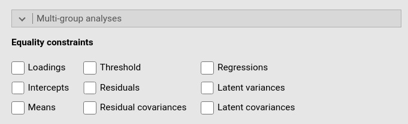
Once a multi-group factor is set in the variable definition (see above), in this panel one can choose which parameters to fix as equal across groups.
The options are:
Multilevel Analysis
Multilevel models are not available in the GUI version of SEMLj. To estimate these models in jamovi, please use SEM via lavaan syntax in jamovi
Output Options
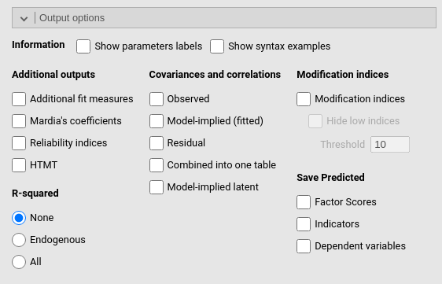
This panel allows requesting all sort of additional information about the model results, such as the \(R^2\)’s, the implied and residual variances and covariances, and the modification indexes.
As regards predicted values, there are three possible types of predicted values that can be saved to the datasheet.
| Factor Scores |
this option saves, for each participant, the latent variables predicted
values based on the latent variables estimation. The values are obtained
with lavaan::lavPredict(..,type="lv"). See Rosseel (2012) for
details. The values are basically factor scores.
|
| Indicators |
this option saves, for each participant, the observed variables
predicted values based on the latent variables estimation. The values
are obtained with lavaan::lavPredict(..,type="ov"). See
Rosseel (2012)
for details
|
| Dependent variables | this option saves, for each participant, the model based predicted values of the observed variables involved in the measurement of purely endogenous dependent variables. The predicted values computation is based on Rooij et al. (2022), and the implementation is adpted from github SEMpredict |
The name of the new variables saved in the datasheet are indicated in
a footnote of the Info Table.
The options are:
| Show parameters labels | show the labels of the parameters in the model |
| Show syntax examples | show examples of the lavaan model syntax |
| Show Lavaan Options | show options of the lavaan model |
| Additional fit measures | show additional fit measures (e.g., CFI, TLI, etc.) |
| Mardia’s coefficients | show Mardia’s coefficients for multivariate skewness and kurtosis |
| Reliability indices | shows additional reliability indices |
| HTMT |
TRUE or FALSE (default), show
Heterotrait-monotrait (HTMT) ratio of correlations as reccomended by
Henseler, Ringle, and Sarstedt (2015)
|
| R-squared |
compute R-squared for all endogenous variables (Endogenous)
or for all variables in the model (All). None
for no R-squared.
|
| Observed | show the covariances and correlations between the observed values of the (manifest) variables |
| Model-implied (fitted) | show the covariances and correlations between the model-implied / fitted values of the (manifest) variables |
| Residual | show the covariances and correlations between the residuals of the (manifest) variables. |
| Combined into one table | combine the (up to) three covariance / correlation tables into one table (i.e., showing observed, model-implied and residual values for each variable combination underneath each other) |
| Model-implied latent | show model-implied latent covariances |
| Modification indices | show modification indices for if certain terms were removed from the model |
| Hide low indices | hide modification indices below a certain threshold. |
| Threshold | Numeric (default: 10), set a threshold the modification indices must exceed in order to be shown. |
| Factor Scores |
this option saves, for each participant, the latent variables predicted
values based on the latent variables estimation. The values are obtained
with lavaan::lavPredict(..,type="lv"). See Rosseel (2012) for
details. The values are basically factor scores.
|
| Indicators |
this option saves, for each participant, the observed variables
predicted values based on the latent variables estimation. The values
are obtained with lavaan::lavPredict(..,type="ov"). See
Rosseel (2012)
for details
|
| Dependent variables | this option saves, for each participant, the model based predicted values of the observed variables involved in the measurement of purely endogenous dependent variables. The predicted values computation is based on Rooij et al. (2022), and the implementation is adpted from github SEMpredict |
Path Diagram
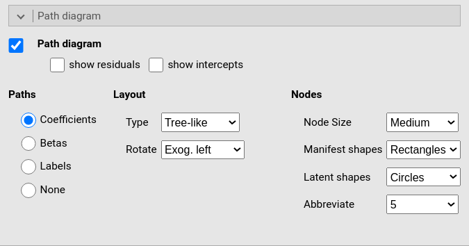
This panel produces the path diagram graph and allow for some change in shapes and orientation of the diagram. The digram is produced using R semPlot module, see also (Epskamp 2015)
The options are:
Input Data
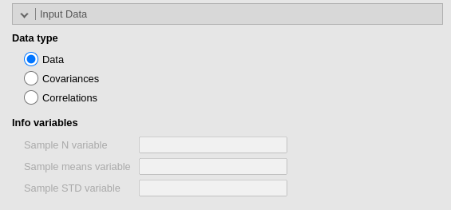
This panel allows to use variances-covariances matrix as input data. Please see a detailed example here Sample statistics as input data.
| Type of input |
The type of input data (default: “Data”), it can be
Covariances or Correlations.
|
| Sample N variable | The column name in the dataset containing the sample size of the covariances |
| Sample means variable | The column name in the dataset containing the sample means of the observed variables |
| Sample STD variable | The column name in the dataset containing the sample standard deviations of the observed variables |
Examples
Some worked out practical examples can be found here
Comments?
Got comments, issues or spotted a bug? Please open an issue on SEMLj at github or send me an email